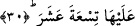

29. İnsanın derisini kavurur.
Kavurur şeklinde tercüme edilen “levvâha” kelimesini açmak gerekirse Arapçada;
“lâhat ennâru eşşey’e” denilirki anlamı ateş bir şeyi yaktı, kapkara etti demek olur. Yine
Arapçada “lâhahu esseferu evi’l-ataşu” denilir ki anlamı yolculuk veya susuzluk filanca
kişiyi değiştirdi anlamına gelir. Herhangi bir nesne, şâyet yağlı ise yandığında
kararması da bu kelime ile ifâde olunur.
Aynı âyette yer alan “beşer” kelimesi “beşera” kelimesinin çoğuludur. Beşera demek
insan derisinin dış yüzeyi demektir. Buna göre o sekar insanın cildinin dış yüzeyini
değiştirip kapkara yapar demek olur. Bâzı tefsircilere göre ateş onların cildlerini yakar
ve geceden daha kara bir hâle getirir demektir.
Burada; “lâ tubkî ve la tezer/hem bırakmaz, hem vazgeçmez” âyetleri göz önüne
alındığında “ateşin insan derisini ne şekilde kararttığını anlatmak mümkün değildir”
şeklinde gelebilecek bir itiraza şöyle cevap verilebilir: “Bu âyet-i kerîmede insanın
külliyyen yok olacağına dâir herhangi bir belirti yoktur. Bununla birlikte eğer insan yok
olacaksa bunun yüzünün kapkara kesilmesinden sonra yok olması da mümkündür”
Bâzı âlimlere göre “levvâha” görünmek, zuhûr etmek anlamında ism-i fâil olabilir,
“beşer” kelimesi de beden derisi anlamına değil de insan anlamınadır. Âyetin mânâsı:
“Sekar/cehennem insanlara görünür”.
Nitekim: “O sekar insana beş yüz yıllık mesâfeden gözükür” denilmiştir ki bu tefsir
Allah’ın: “Ve görene cehennem açık bir şekilde gösterildiği zaman” (en-Nâziat,
79/36) sözü gibi olmuş olur. Böylece cehennem beşyüz yıllık mesâfeden kâfire
gözüktüğünde ona “semûmu/vücûdun içine işleyen azâbı” ve “harûru/sıcaklığı” ulaşır.
Tıpkı mümine rüzgâr ve esintisinin beş yüz yıllık mesâfeden ulaştığı gibi.
30. Üzerinde ondokuz (muhafız melek) vardır.
Sekar’ın “üzerinde ondokuz (muhafız melek) vardır.” Bu melekler sekarın işlerini
görürler ve oraya girmiş olanlara hükmederler. Bunlar Mâlik ve onunla birlikte bulunan
onsekiz melektir. Bu meleklerin gözleri çakan şimşek gibi, dişleri dokumacı tarağı
gibidir. Saçları ayaklarına kadar uzanır, ağızlarından cehennemin alevi fışkırır. İki
omuzları arası bir yıllık yürüyüş mesâfesi kadardır. Kalplerinden acıma ve merhamet
duyguları tamamen sökülüp, alınmıştır. Her biri bir avucuna yetmişbin kişiyi alarak
cehennemin dilediği noktasına atabilme gücüne sâhiptir.
Bâzı âlimlere göre bu “ondokuz” orada görevli meleklerin reisleri ve başkanlarının
sayısıdır. Orada görevli olan meleklerin tümünün sayısına gelince Allah’ın şu âyetinde
olduğu gibi bunu ancak kendisi bilir: “Rabbinin ordularını kendisinden başkası
bilmez.” (el-Müddessir, 74/31) Bu önde gelen ondokuz tane meleğin sayılara sığmaz,